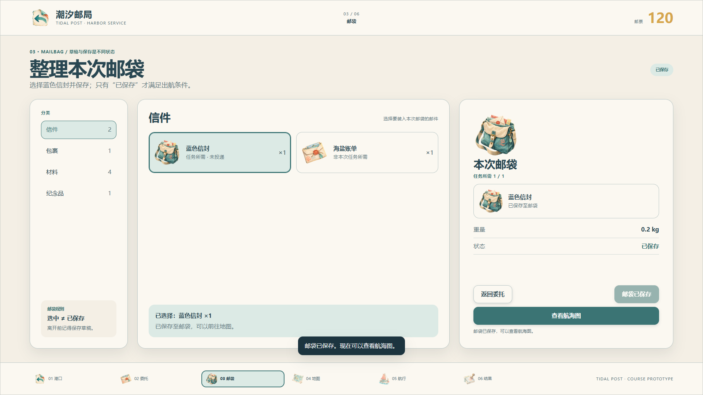
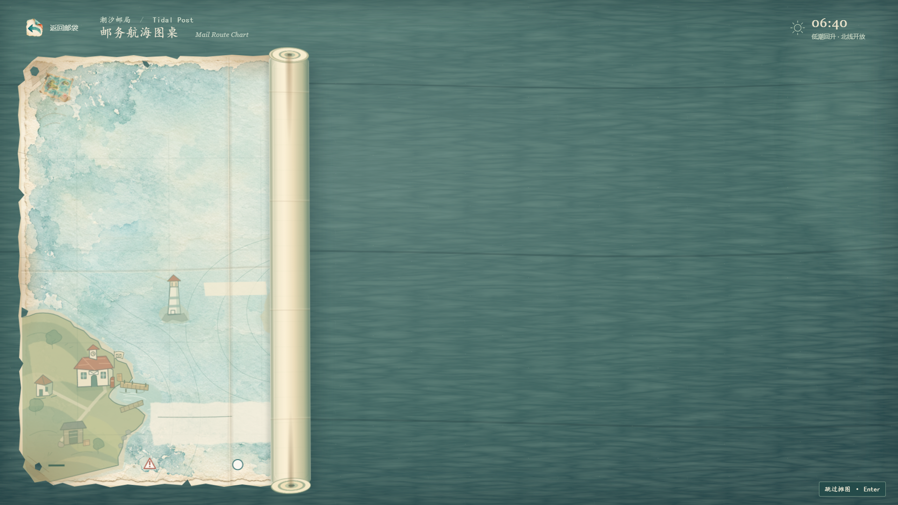
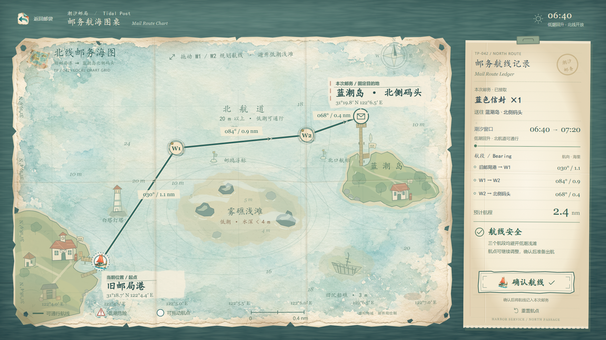
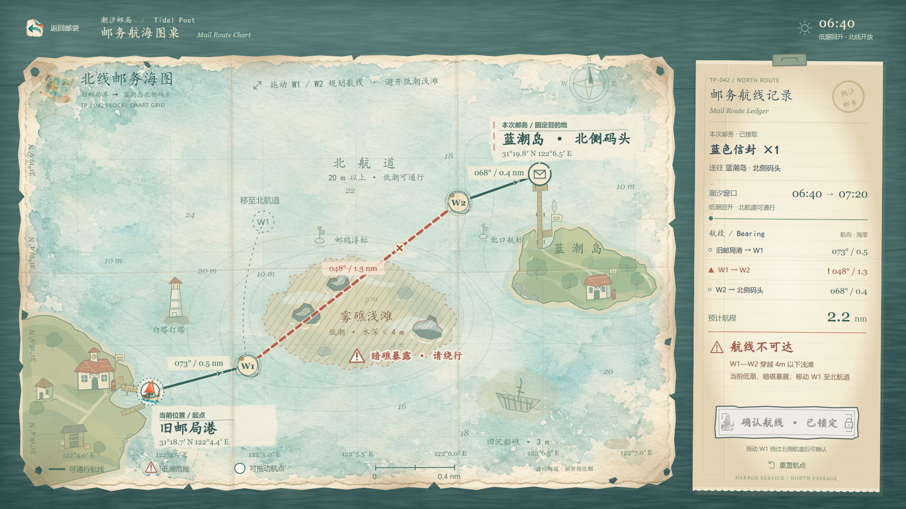
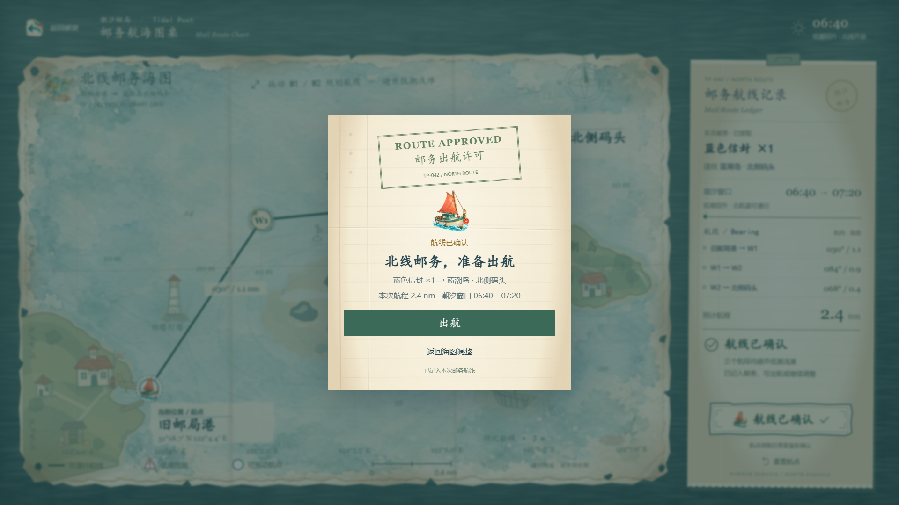

邮务准备
保存邮件，让出航准备有起点
潮汐邮局 / Tidal Post
游戏界面设计 · 第四周
游戏界面设计 · 第四周

玩家任务
准备委托要求的邮件，并明确本次投递目标。保存成功后，才能查看航海图。
状态与反馈
选择邮件形成草稿；保存后显示已保存状态。错误邮件会说明不匹配原因，并允许重新选择。
本次连接
邮袋进入海图，再确认航线、开始航行；邮件、目的地和规划结果在同一任务中延续。

准备委托要求的邮件，并明确本次投递目标。保存成功后，才能查看航海图。
选择邮件形成草稿；保存后显示已保存状态。错误邮件会说明不匹配原因，并允许重新选择。
邮袋进入海图，再确认航线、开始航行；邮件、目的地和规划结果在同一任务中延续。

四角磨损、边缘缺口、少量纸孔与折痕，让海图像长期随船使用的邮务工具。
起卷加速，经过旧折痕时放慢，再继续展开并轻轻停稳。裁剪边界与卷筒同步移动。
展开中锁定规划输入；可点击或按 Enter / Space / Esc 跳过。完成后焦点回到 W1。

加入坐标、方位、海上地标和航标。玩家依据空间信息设定路线，而非重复选择委托目的地。
先看起点、终点、航线和确认状态；再查航向、距离和潮汐。海图承担主要规划任务。
拖动 W1 / W2，或聚焦后按方向键移动。航线、距离和记录实时更新，安全后允许确认。

危险同时通过颜色、虚线、三角警告、浅滩斜线和文字说明表达，灰度下仍可辨认。
指出具体危险航段和低潮限制。禁止确认与出航，避免把不可通行路线带入下一阶段。
玩家将航点移回北航道后，警告消失、确认恢复。提示帮助理解规则，保留玩家的判断与操作。

以邮务放行印章、任务邮件、目的地和规划航程明确告诉玩家：本次路线已经记录。
“出航”进入航行；“返回海图调整”继续规划。确认后再改航点，会撤销原有出航许可。
返回邮袋保留邮件与航点草稿，再进地图只做短淡入；每轮任务首次进入才完整展开。